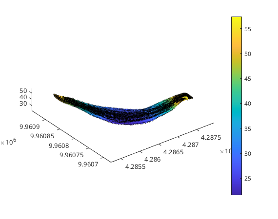
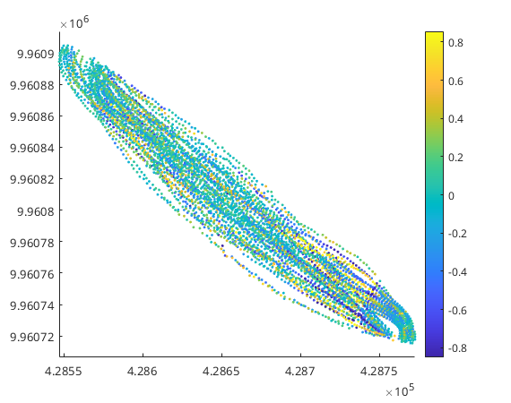
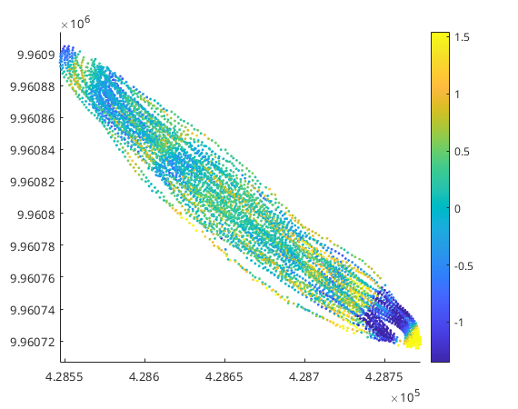

Creation of a bathymetric model
Contents
Once the VMADCP data were selected and cross-sections are defined, it is necessary to define a bathymetric model, which will be used in the rest of the processing. The most obvious way, is to construct the bathymetry model from the VMADCP bottom tracking data. In some cases, however, these data maybe of poor quality and a bathymetric model might be constructed from another source.
The Bathymetry class
The requirements for a bathymetric model are defined in the Bathymetry class. In essence a Bathymetry object must be able to provide a bed elevation for any given (x,y) position.
Bathymetry from VMADCP data
The Bottom tracking of ADCPs produces a scattered cloud of bed detection. The BathymetryScatteredPoints class defines a bathymetric model from a given clous of scattered points. The class used an interpolator to smooth and interpolate the input cloud. The BathymetryScatteredPoints can be constructed from a VMADCP object. In that case the class obtains the bed positions from the ADCP bottom tracking and uses those as source for the cloud of bed positions. In the case of the Muara Muntai bend dataset we have seven cross-sections. For each we wish to construct a bathymetry. We can do this by constructing the BathymetryScatteredPoints by passing it the VMADCP object and the EnsembleFilter objects:
B = BathymetryScatteredPoints(mmbend, ef);
We can now plot the bathymetry
figure B(4).plot colorbar
We can see in the figure the black dots, representing the scattered cloud of bed detections. The colored surface is the bathymetric model that is fitted to the cloud of point.
Fine tuning the bathymetry interpolation
We take a close look at the bathymetry objects:
B(4)
ans =
BathymetryScatteredPoints with properties:
known: [3×5940 double]
interpolator: [1×1 LoessNNInterpolator]
water_level: [1×1 ConstantWaterLevel]
we see that the bathymetry object has the property known holding the measured bed detection. The interpolator property, which is an Interpolator object that manages all interpolations and smoothing. The last property water_level is needed to compute the water depth of given points. The Interpolator object looks like this:
B(4).interpolator
ans =
LoessNNInterpolator with properties:
span: 0.0100
robust_iterations: 0
n_threads: 6
order: 1
known: [3×5940 double]
density_reduction: 1
n_dims: 2
The interpolator property holds a LoessNNInterpolator which uses a loess filter to smooth the input cloud of points and a natural neighbor interpolator to interpolate locations other than the input points. The smoothing step is done by the loess filter through a local linear regression. This regression is done over a portion of the input points indicated by the span property. This is now set to 0.01, meaning that the linear regression is done over 1% of the input points. The larger this number the smoother the fit. The risk in this step is to either overfit, or underfit. A good way to investigate this is by taking a look at the residuals:
figure B(4).plot_residuals
The residuals look quite randomly distributed in space. If some clear spatial structure can observed, the fit might be smoothing too much. Suppose we set the span rather high and then look at the residuals
B(4).interpolator.span = 0.2; figure B(4).plot_residuals
Now we clearly see regions of over and underestimation indicating we are smoothing too much. We set back the smoothing to a more reasonable value
B(4).interpolator.span = 0.01;